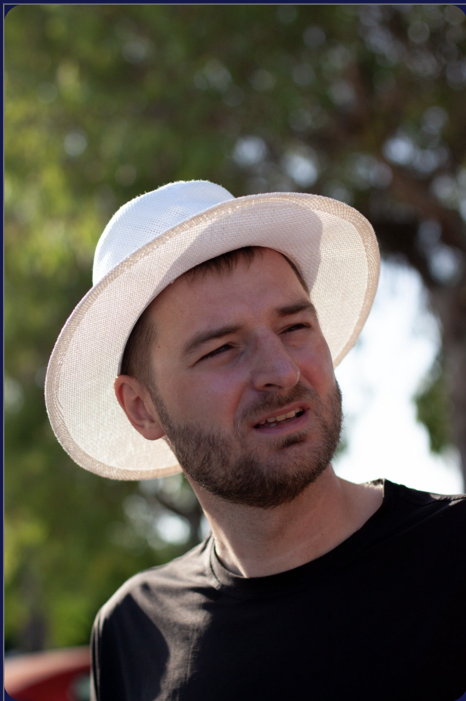
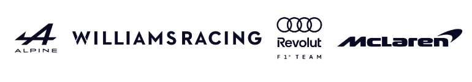

How to structure test data so AI agents can find, compare and analyse it
Tomáš Neubauer
CTO & Co-Founder, Quix

CTO & Co-Founder · Quix · Prague, Czech Republic
15 years working with sensor & test data
Cars · Cycling · Skiing · Coffee · Photography
Quix · London, UK · Est. 2020 · Founded by F1 engineers

Where test data lives, why you can’t just ask it questions, and the foundation that fixes that.
Repeat all four steps for every source and every question, so large aggregated queries across tests are slow, brittle and rarely attempted.
And because every source lands in its own raw format, each new type of ingestion needs a brand-new query written from scratch.
Test data is large by nature, so the storage decision gets made early and is rarely revisited. Three architectures show up again and again. Each one decides which questions you will ever be able to ask.
You have stored the data. You haven’t made it searchable.
Even if the data fits, the bill never stops growing.
Right storage. Wrong latency for anything interactive.
Iceberg on S3, queried through Athena or Trino. Five minutes of one signal, averaged per second.
Every pan or zoom changes the time range and the bucket size, so it re-issues this query. Five panels means five queries per interaction. The user expects feedback in under 100 ms.
The floor comes from the catalog, not the data. No amount of downsampling makes a 1–3 s round-trip feel interactive.
Every column has a red cell. Whichever you pick, some questions stay impossible.
Great engine. But “mount everything” doesn’t scale.
Before any agent can locate the right data quickly, the configuration of a test and the data it produced have to live together. This is the part most teams skip, and the part everything else depends on.
A channel in the raw file. Every architecture we saw has this.
A property of the test, recorded in PLM, SAP or a spreadsheet. The rig has never heard of it.
Same. It only exists once we join it in during preprocessing.
If configuration and data aren’t joined, the agent has nowhere to look.
The IDs people ask by go into the folder path. Everything else stays as columns.
| programme | campaign | rig | test_id | part_no | operator | ambient_c | firmware |
|---|---|---|---|---|---|---|---|
| ABC | A | R7 | 0042 | PN-1188-03 | j.mensah | 21.4 | 4.2.1 |
| ABC | A | R7 | 0043 | PN-1188-03 | j.mensah | 21.9 | 4.2.1 |
| ABC | B | R2 | 0107 | PN-1188-04 | l.novak | 19.8 | 4.3.0 |
| XYZ | A | R7 | 0011 | PN-2201-01 | a.duarte | 22.6 | 4.3.0 |
Join the configuration in, extract the IDs, write partitioned Parquet. The joined copy is what everything queries.
The agent never scans. It asks the configuration DB and the catalog until it has exact partition keys, mounts only those folders, and lets DuckDB do the rest.
Handing rows to an LLM is expensive, slow, and a leak. So the model writes the code, and the code reads the rows.
Gigabytes analysed, kilobytes seen. The model reasons about the answer, not the data.
Quix builds the data platform behind this talk: test data joined with its configuration, on open formats you own, with agents on top.
quix.io · tomas@quix.io